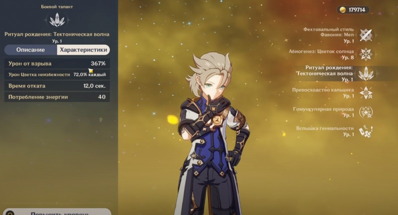
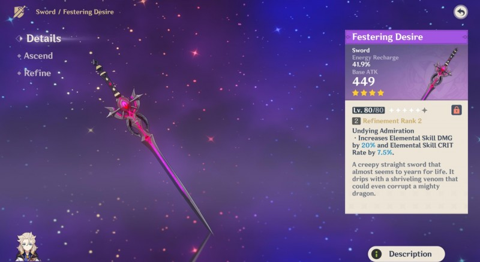
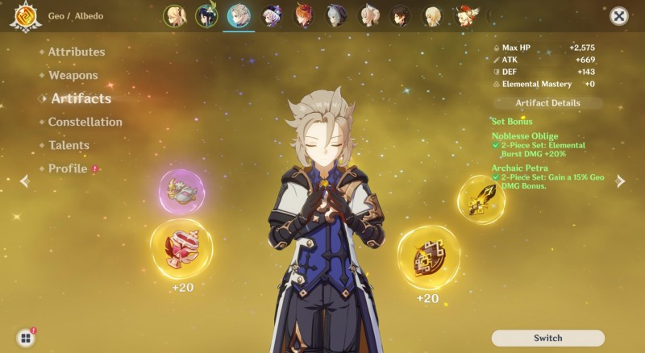

В Genshin Impact Альбедо является сильным 5-звездочным персонажем, использующим одноручный меч и относящийся к классу Гео. В этом руководстве мы расскажем о его особенностях и способностях, а также укажем лучшие билды, оружие и артефакты для него. Вы также узнаете, как прокачивать алхимика, и какие для этого понадобятся материалы.
Первым делом рассмотрим предназначение, а также сильные и слабые стороны данного персонажа. Его можно использовать для выполнения следующих задач:
Сражения с боссами – может отлично показать себя в них.
Сражения с рядовыми противниками – может хорошо показать себя в них.
Поддержка команды – может отлично показать себя в них.
Исследование – может хорошо показать себя в них.
Что касается преимуществ героя, то к ним следует отнести:
Быстрые атаки могут легко ошеломить противников.
Получает дополнительные 125 единиц мастерства стихий после использования стихийного взрыва.
Элементальный взрыв сравнительно быстро восстанавливается и требует мало энергии для использования.
Не обошлось и без слабостей: Приходится полагаться на взрыв стихий, чтобы наносить максимальный урон.
Элементальный навык персонажа под названием «Абогинез: Цветок солнца» создает небольшую конструкцию, наносящую Гео урон по площади (зависит от уровня защиты). Если герой встанет на нее, то появится кристаллическая площадка, которая тут же поднимет его на небольшую высоту. Она точно пригодится вам при решении некоторых головоломок. Одновременно можно создавать не больше двух цветков.
При наличии пассивного навыка «Гомункулярная природа» использование взрыва стихий «Ритуал рождения: Тектоническая волна» автоматически дает всем персонажам в вашей группе 125 единиц мастерства стихий на несколько секунд. Это делает Альбедо неплохим второстепенным DPS.
На использование элементального взрыва требуется всего 40 единиц энергии, а скорость его восстановления довольно высока. Поэтому, прежде чем переключиться на своего основного дамагера постарайтесь для начала применить «Тектоническую волну», чтобы нанести дополнительный урон.
Добавим, что Альбедо имеет 10-процентный шанс создать вдвое больше материалов возвышения оружия при их крафте. Этот эффект может быть чрезвычайно полезен, если вам не хватает ресурсов или требуется множество одинаковых предметов.
Созвездия открываются с помощью удачи персонажа, накапливаемой при выпадении копий героя в ходе Молитив. Первый, четвертый и пятый таланты не приносят большой пользы. Наиболее эффективными являются второе и третье созвездия, поэтому после С3 роллить Альбедо практически не имеет смысла.
Цветок эдема – созданные «Абогинезом» цветки мимолетности начинают регенерировать 1,2 единицы энергии персонажа.
Открытие фанерозоя – созданные «Абогинезом» цветки мимолетности наделяют персонажа Роковым расчетом на 30 секунд, который повышает урон на 30% от защиты героя (складывается до 4-х раз). При использовании «Тектонической волны» эффект снимается, а повреждения от взрыва стихий увеличиваются.
Милость Гелиоса – повышает уровень «Абогинеза» на 3. Максимальный уровень 15-й.
Сошествие духовности – повышает повреждения от атаки в падении на 30% в зоне Цветка солнца.
Прилив катархея – повышает уровень «Тектонической волны» на 3. Максимальный уровень 15-й.
Пыль очищения – повышает на 17% урон активных членов группы в зоне действия Цветка солнца, если на них наложен эффект «Кристаллизация».
На данный момент времени этого персонажа эффективнее всего использовать в качестве второстепенного ДПС с упором в поддержку, регулярно используя его стихийный взрыв и накладывая щиты на союзников, а затем быстренько переключаясь на основного дамагера. Поэтому необходимо максимизировать его элементальные навыки.
Предвестник зари (3-звездочный) – повышает вероятность нанесения критического урона на 14%, когда уровень здоровья выше 90%. Лучший меч при игре за Альбедо, направленного на защиту и создание стихийных реакций.
Оскверненное желание (4-звездочное) – повышает урон от элементального навыка на 16%, а вероятность нанесения критического удара – на 6%. Можно получить путем участия в событии «Принц мела и дракон». Чуть слабее предыдущего варианта.
Кромсатель пиков (5-звездочный) – повышает прочность щита на 20 процентов, а в случае успешного удара увеличивает показатель атаки на 4 процентов на 8 секунд. Эффект суммируется до 5 раз и проявляется раз в 0,3 секунды. При нахождении под защитой щита атака от данного эффекта возрастает на 100 процентов. Отличный вариант для тех, кто планирует дольше задерживаться на Альбедо.
Стальное жало (4-звездочный) – при нанесении элементального урона все повреждения возрастают на 6 процентов на 6 секунд. Эффект суммируется до 2 раз и возникает один раз в секунду. Неплохой вариант для усиления щитов союзников с помощью мастерства стихий.
Если вы собираетесь часто использовать стихийные умения и взрывы Альбедо, то мы советуем сфокусировать внимание на следующие параметры артефактов: шанс крита и критический урон (в соотношении 1 к 2) / АТК / Гео урон. При этом следует взять следующие сеты:
Архаичный камень (2 предмета) – повышает Гео урон на 15%. Можно добыть в подземелье «Владения Гу Юнь».
Церемония древней знати (2 предмета) – повышает повреждения от взрыва стихии на 20%. Можно добыть в подземелье «Чистая вода и горная пещера».
При решении применять Альбедо для увеличения защиты своей команды с помощью стихийных реакций необходимо уделить внимание следующим параметрам: защита / защита с критами /гео урон. Если в вашей группе имеется Пиро или Электро дамагер, например, Дилюк или Кэ Цин, то соберите следующие сеты:
Усмиряющий гром: (2 предмета) – увеличивают электро сопротивление на 40 процентов; (4 предмета) – повышают повреждения при сражении с противниками, которые находятся под действием Электро, на 35 процентов. Можно добыть в подземелье «Июльские сады».
Ступающий по лаве: (2 предмета) – увеличивают пиро сопротивление на 40 процентов; (4 предмета) – повышают повреждения при сражении с противниками, которые находятся под действием Пиро, на 35 процентов. Можно добыть в подземелье «Скрытый дворец Ву Ван».
При отсутствии подобных персонажей в команде соберите полный сет «Архаичного камня». Бонус от его четырех частей будет не очень полезен, но от первых двух окажется крайне эффективен.
